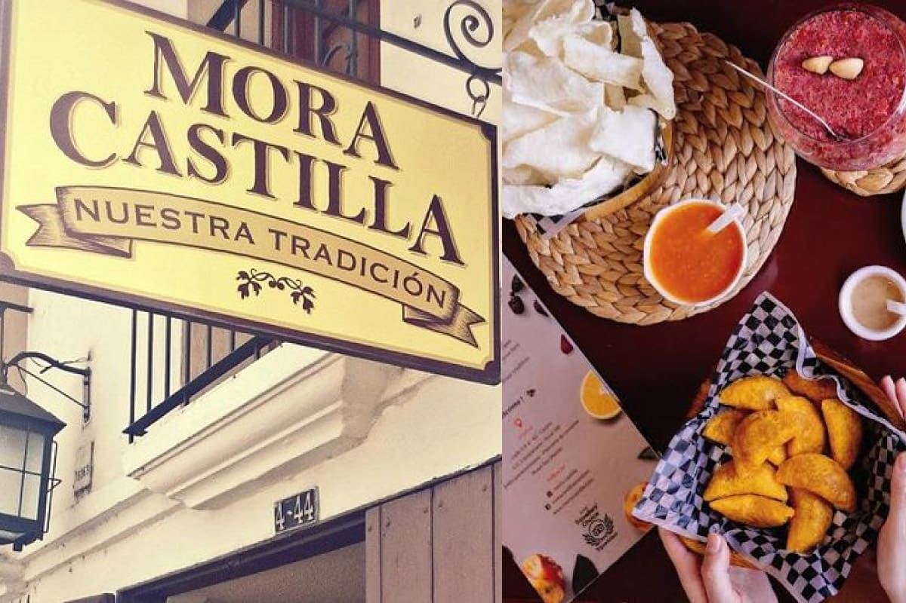
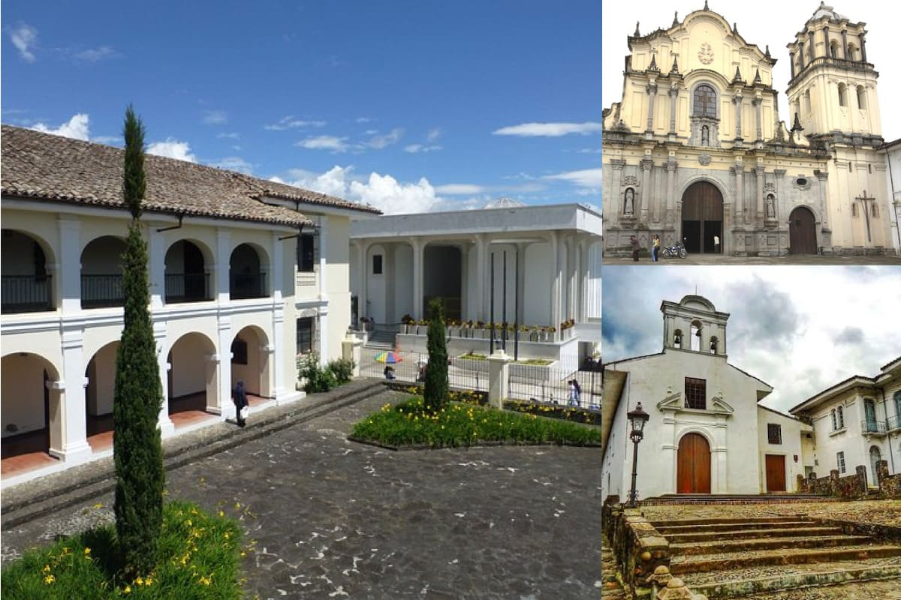
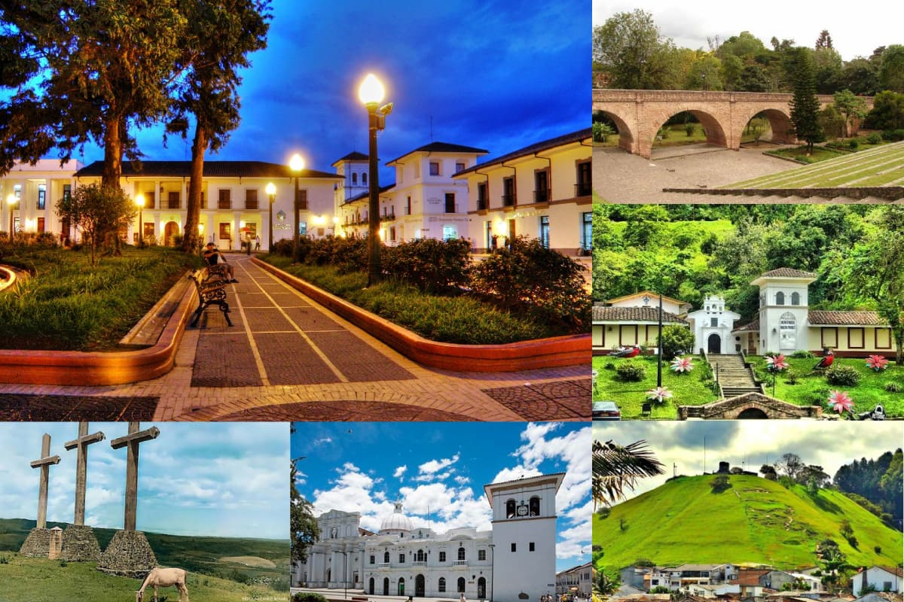

- COMIDAS TÍPICAS -

Mora Castilla es un pequeño lugar que deleita con esos sabores únicos de la gastronomía caucana. Pequeños bocados que exaltan nuestros sentidos. Entre las comidas y preparaciones típicas de Popayán y el Cauca se destacan las empanadas de pipián, los tamales de pipián, la carantanta, el pipián caucano, el champús, la mazamorra caucana, el sancocho de gallina, las empanadas de añejo, el manjar blanco y el dulce de brevas, platos y bebidas que reflejan la riqueza gastronómica y las tradiciones de la región.
ver más
- SITIOS HISTÓRICOS -

Popayán se caracteriza por su riqueza histórica y cultural, reflejada en sus numerosos museos e iglesias. Entre sus espacios culturales se destacan el Museo de Historia Natural, el Museo Arquidiocesano de Arte Religioso y la Casa Museo Mosquera. Asimismo, la ciudad cuenta con iglesias emblemáticas como San Francisco, Santo Domingo, La Ermita y la Catedral Basílica de Nuestra Señora de la Asunción, que hacen parte de su patrimonio arquitectónico y religioso.
ver más
- SITIOS TURÍSTICOS -

El Morro de Tulcán, el Puente del Humilladero, el Parque Caldas, el Pueblito Patojo, el Parque Nacional Natural Puracé, la Torre del Reloj, el Cerro de las Tres Cruces y el río Cauca son algunos de los lugares turísticos más representativos de Popayán y sus alrededores. Tengamos en cuenta también que los sitios turísticos de Popayán son importantes porque resguardan una de las herencias y tradiciones religiosas y culturales más valiosas de América
ver más